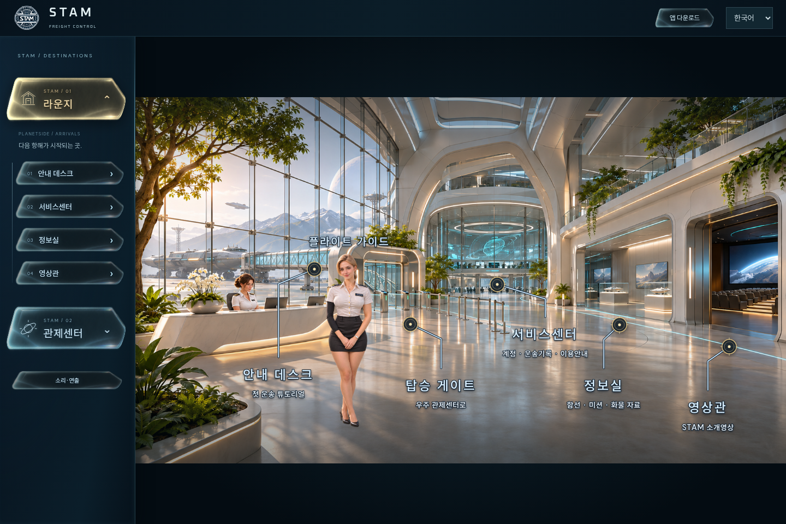
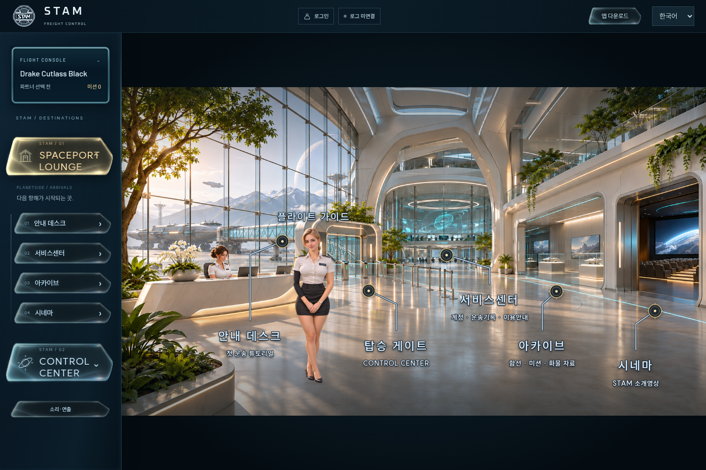

셔틀 출발 전에, 라운지를 잠깐 둘러보시죠.
시네마 → 아카이브 → 서비스센터 → 게이트
가이드와 라운지를 준비하고 있습니다…
준비 중
새로 제작한 가이드 자세 5종을 사용하는 2.5D 투어 시안입니다. 실제 메뉴는 현재 로컬 빌드에서 표시합니다. 자연 보행·립싱크·확정 음성은 포함하지 않습니다.
현재 화면 확인: 배포본 / 미통합 작업본
아래는 실제 브라우저 캡처입니다. FLIGHT CONSOLE·아카이브·시네마 명칭은 미통합 작업본에 있으며 현재 배포본과 구분합니다.

